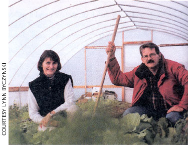

A Growing Publication
The surprising success of the book Fast Food Nation; Lawrence, Kan. couple offer a resource publication, Growing For Market; making sense of land trusts, covenants, and easements.
By the Mother Earth News editors
August/September 2002
Green Gazette
The Muse of independence may not visit the statehouse very often, yet that's exactly where Lynn Byczynski found the inspiration that led her to publish the country's best market-gardening newsletter.
A reporter for the Kansas City Star, Lynn was covering the Kansas House of Representatives. "I thought, 'if I have to listen to one more pompous legislator, I will just burst,"' she says. She longed to be growing vegetables and flowers in the fields of the farm her family had just bought.
Then she opened a desk drawer in the statehouse press gallery. Inside, previous
legislative scribes had signed their names 20 to mark their passage. "One of the names was Cass Peterson. I knew of her through New Farm and Harrowsmith z. magazines. She and her partner (Ward Sinclair) had a lot of stature as reporters for The Washington Post, yet they had over those incredible careers to become pioneers in modem market gardening. It was so encouraging!"
Although Lynn and husband Daniel Nagengast had just become parents for the first time, they soon quit their jobs and started farming - and writing about farming. There was no good source of information for small farmers, she says. "New Farm (magazine) was ... more for row crop farmers. Gardening magazines were not particularly relevant, so I took it upon myself to start what I hoped would become a forum for market gardeners to share experiences," Lynn says.
So began the monthly newsletter Growing For Market.
GFM is s30 for 12 issues per year.
To Subscribe, contact:
Growing for Market
P.O. Box 3747
Lawrence, KS 66046
(800) 307-8949
Fax: (785) 748-0609
growing4market@earthlink.net
www.growingformarket.com
"GFM provides a wonderful forum for the exchange of practical information between growers that is the key to improving our skills and surviving economically," says Eliot Coleman, author of The New Organic Grower.
Coleman is not the only one who feels that way. Now celebrating its 10th anniversary, Growing For Market has a paid circulation of 3,500.
You can get a taste of Lynn's perspective on "Selling Organic," on Page 37.
- George DeVault
Land Trusts
In our age of urban, suburban and even rural sprawl, no land is sacred. But there are steps you can take to improve the odds your beloved property won't someday be leveled for yet another condominium development or amusement park.
Land covenants are land-use restrictions between buyers and sellers, or between partners. They're attached to the property deed and are recorded at the local county courthouse. However, protection of covenants is up to the new owner, and the covenants can be easily overturned
A conservation easement is a type of self-zoning, where you guarantee some land-use activities and prohibit others by relinquishing certain landowner rights to a monitoring and enforcing agency (such as a local land trust organization or the U.S. Forest Service). There are easements guaranteeing property will never be logged, will always be reserved for agriculture or will remain undeveloped.
Conservation trusts are another level of protection, where you either donate or will your property to an existing trust, or set up your own. Trusts are nonprofit corporations with a charter that defines the uses of the land it owns or controls. Starting and maintaining your own trust can be challenging, even for a cooperating neighborhood group.
Jesse Wolf Hardin
Hear more from Jesse in "Bringing Nature Home, " Page 128.
Sneeze-Free Trees
Many commonly planted landscape trees are male trees that produce large amounts of pollen, but no fruit or seeds. While these "litter free" male trees seemed more desirable than female trees, Thomas Ogren argues in his new book Allergy-free Gardening (see MOTHER's Bookshelf, Page 104) that planting so many pollen-producing trees around our homes has dramatically increased our exposure to irritating tree pollen. Here is Ogren's Top 10 list of pollen-free landscape trees.
1. Female juniper trees Also called Red Cedar; example: 'Pendula Virdis'
2. Female (fruit-bearing) Chinese Pistache trees
3. Female Ash trees Example: 'Summit' ash
4. Female Red Maple trees: Example: 'Autumn Glory'
5. Nonflowering olive cultivars Example: 'Swan Hill' olive
6. Female mulberry trees Example: Weeping mulberry
7. Fruit-bearing, female Hollies Example: 'Sparkler' English holly
8. Female poplars Example: 'Thieves' poplar
9. Female decodar cedar tree
10. Female Silver Maple trees Example: 'Northline' silver maple
Fast Food Fine Read
Just prior to the initial release of Fast Food Nation: The Dark Side of the All American Meal, a representative of the book's publisher, Houghton Mifflin, told Publisher's Weekly the company had ordered a large first printing of the book (while declining to say exactly how big). Houghton Mifflin seemed a little overly optimistic given Nation was Eric Schlosser's first book attempt and the book was about an industry whose success was based in blandness.
I hen that first printing sold out. And then the second printing did, too. And then the third ...
A year and a half and roughly 300,000 copies later, Nation has been unanimously declared the biggest surprise nonfiction bestseller of the century.
In the afterward to the paperback edition, Schlosser chalks up Nation's popularity to timing. "Its success should not be attributed to my literary style, my storytelling ability or to the novelty of my arguments ... Not just in the United States but throughout Western Europe, people are beginning to question the massive, homogenizing systems that produce, distribute and market their food."
All humility aside, Schlosser's thorough reporting and compelling narrative obviously made some difference. (After all, he's not the first person to assert that consolidation is bad for small farmers or that meat packing plants abuse their largely immigrant workforce.)
But what's really fueled the book's success has been its careful examination of the process involved in making fast food so unremarkable. No element of modern American culture goes untouched. Mother Earth News readers won't be surprised (much) by Schlosser's description of how agricultural land, food and meat quality are harmed by industrial production. But even knowledgeable readers might be surprised to learn how even the smallest children are targeted in the plans to make fast food chains indispensable to Americans.
- Sarah Beth Cavanah
To order Fast Food Nation, see MOTHER'S Bookshelf, Page 104.
Fast Food Facts: One in eight American workers has worked for McDonald's. McDonald's is the largest beef buyer in the One in three meat processing plant workers is reported injured on the job each year, more are unreported. - From Fast Food
|
 |
 |
 |